https://blueteamlabs.online/home/challenge/1
- Introduction
- Questions
- Run “vol.py -f infected.vmem –profile=Win7SP1x86 psscan” that will list all processes. What is the name of the suspicious process?
- What is the parent process ID for the suspicious process?
- What is the initial malicious executable that created this process?
- If you drill down on the suspicious PID (vol.py -f infected.vmem –profile=Win7SP1x86 psscan | grep (PIDhere)), find the process used to delete files
- Find the path where the malicious file was first executed
- Can you identify what ransomware it is?
- What is the filename for the file with the ransomware public key that was used to encrypt the private key?
- Comments
Introduction
The Account Executive called the SOC earlier and sounds very frustrated and angry. He stated he can’t access any files on his computer and keeps receiving a pop-up stating that his files have been encrypted. You disconnected the computer from the network and extracted the memory dump of his machine and started analyzing it with Volatility. Continue your investigation to uncover how the ransomware works and how to stop it!
We’re provided with one .vmen file. REMnux (the distro I use for my malware analysis) has two versions of Volatility installed - version 3 (vol3) and version 2 (vol.py). The versions are quite different, and from my understanding version 2 is still the most common, so I will be using that. Plus, the instructions for this challenge say to use version 3.
You can see all the differences here: https://volatility3.readthedocs.io/en/latest/vol2to3.html
Questions
Run “vol.py -f infected.vmem –profile=Win7SP1x86 psscan” that will list all processes. What is the name of the suspicious process?
Do as we’re told and we’re provided with a big table:
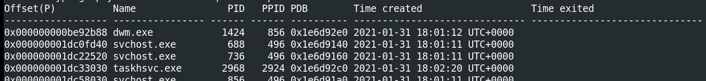
Looking through the different process names, there are a couple strange ones
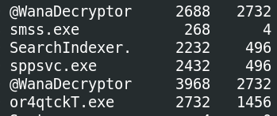
@WanaDecryptor
What is the parent process ID for the suspicious process?
From the table headings in the first image, we can see both @WanaDecryptor processes have a PPID (parent PID) or 2732.
2732
What is the initial malicious executable that created this process?
Checking the PID column for 2732 gives us the answer.
or4qtckT.exe
If you drill down on the suspicious PID (vol.py -f infected.vmem –profile=Win7SP1x86 psscan | grep (PIDhere)), find the process used to delete files
Run the command as we’re told:
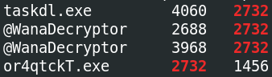
There’s one more related process!
taskdl.exe
Find the path where the malicious file was first executed
We’re not told how to find this, so we’ll have to do some more research ourselves.
Fortunately SANS has created an excellent Volatility cheat sheet, available free here: https://www.sans.org/posters/memory-forensics-cheat-sheet/
If we check handles for or4qwtckT.exe using the command handles -p 2732 (note this and all commands below require $ vol.py -f infected.vmem --profile=Win7SP1x86 before, as with the psscan example). The second handle is a File:
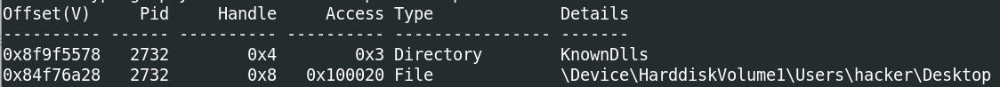
This suggests the file is on the User hacker’s desktop.
Similarly, if we check related DLLs with the command dlllist -p 2732, we get confirmation of this:
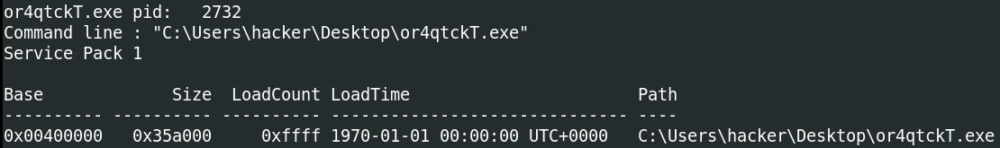
One more thing we can do is scan the memory dump for files, with filescan | grep or4qtckT. And once again:
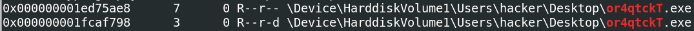
It’s always good to verify your answer with multiple methods, if possible.
C:\Users\hacker\Desktop\or4qtckT.exe
Can you identify what ransomware it is?
My first thought is to get the hash of the file and check it.
We can extract the process using the command procdump -p 2732 -n --dump-dir=./, which gives us a file called executable.2732.exe.
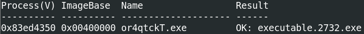
We can take the hash of it with $ sha256sum executable.2732.exe, which gives us 5215d03bf5b6db206a3da5dde0a6cbefc8b4fee2f84b99109b0fce07bd2246d6. Putting the hash into VirusTotal:
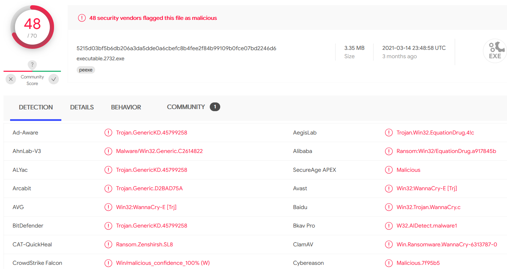
Alternatively, we can extract the file itself, as we know the filename, using the command dumpfiles -r or4qtckT -n --dump-dir=./.
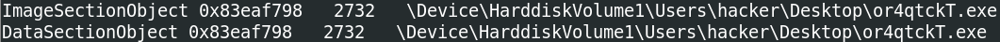
This produces a file called file.2732.0x83eb0c58.or4qtckT.exe.img. The SHA 256 is 993aa68f3bbe281506fd977e51c520d94916d349ff44acfdefba179ca1404d15 (note it’s different), but according to VirusTotal:
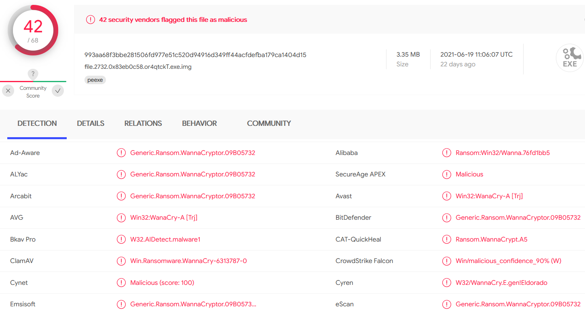
The result is the same.
WannaCry
What is the filename for the file with the ransomware public key that was used to encrypt the private key?
If we’re looking for files, the most obvious thought is filescan. However, this produces lot of files - and this is only a small memory dump. We could try to limit but filetype, but who says they’ll use a standard key extension? We could also try and search by directory, but then again, in theory it could be anywhere. However, before we go down this path…
We’ve already used the handles to show us the files etc being accessed/used by a specific process to find the filename. What if we look deeper?
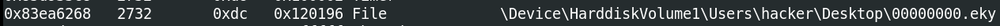
That looks like it could be something.
I want to do a bit more on filescan, however, to see how easy it would be to find.
For the file extension, Google might help. We know it’s WannaCry, so let’s search something simple like “wannacry public key file extension”. The first link for me was a FireEye article: https://www.fireeye.com/blog/threat-research/2017/05/wannacry-malware-profile.html
Lots of interesting information here. And, near the top is the following:
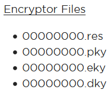
That looks… Familiar. We don’t need to do a filescan and grep for those because we’ve already found one through handles.
The other thought would be the file directory. Again, handles may have given this away, but it wouldn’t be too surprising for the malware and the key to be in the same directory (that is, Desktop). If we do filescan | grep -F "hacker\Desktop (the -F means grep seaches for the fixed string, not using regex), we get quite a lot:
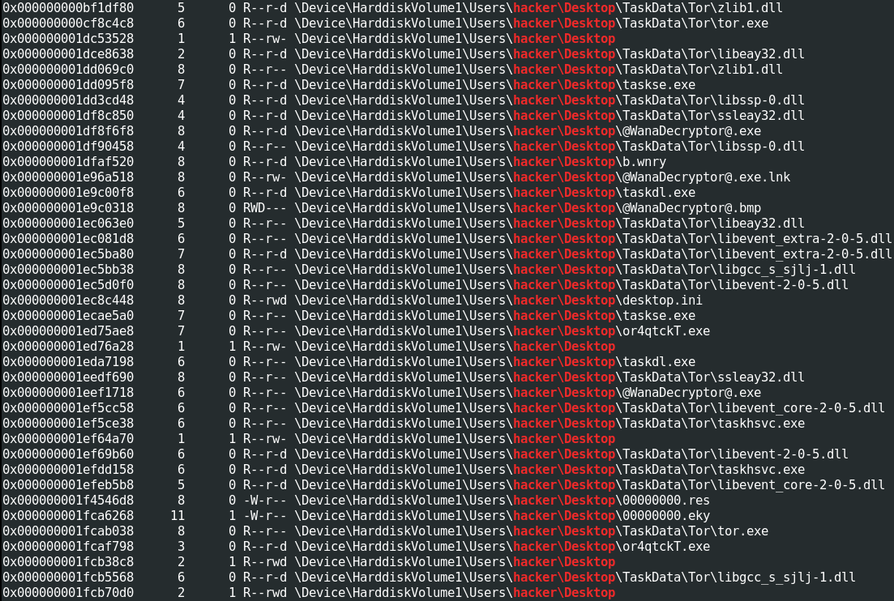
Here we see all the malicious executables, the key, and some other fun files like 00000000.res and b.wnry. The .wnry extension is what’s used by WannaCry for encrypted files. The .res is presumably related to the key.
00000000.eky
Comments?
Feel free to comment on my LinkedIn post